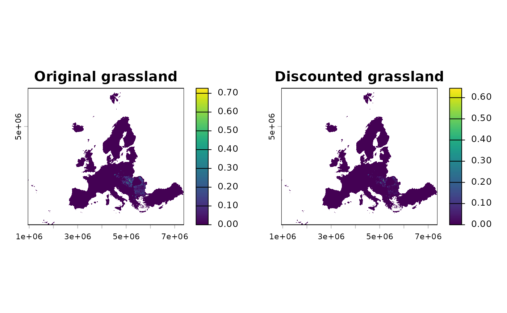

Apply temporal discount to land-use layers based on an age variable
Source:R/insights_discount.R
insights_discount.RdThis function applies a temporal discount to land-use layers based on a corresponding age or maturity variable. The age variable is always connected to a specific land-use class (e.g. forest age linked to forest fraction) and represents increasing value over time.
Newly established habitat (low age) does not provide full habitat value.
The target_age parameter controls how quickly the age translates to
effective habitat value: it is the age at which habitat reaches
target of its full value. The function produces a discounted version
of lu by applying a maturity factor derived from the age:
$$H_{\mathrm{eff}} = H \times [1 - (1 - p)^{a / a_p}]$$
where \(H\) is the land-use value, \(a\) is the cell age,
\(a_p\) is target_age, and \(p\) is target. Internally,
this is equivalent to deriving the per-age discount rate:
$$d = 1 - (1 - p)^{1 / a_p}$$
and applying:
$$H_{\mathrm{eff}} = H \times [1 - (1 - d)^a]$$
At
age = 0: the factor is0– no habitat value for brand-new land-use.At
age = target_age: the factor istarget, e.g.0.95by default.As
ageincreases: the factor approaches1– mature habitat reaches full value.
Usage
insights_discount(lu, age, target_age = 20, target = 0.95)
# S4 method for class 'SpatRaster,SpatRaster'
insights_discount(lu,age,target_age,target)
# S4 method for class 'SpatRaster,stars'
insights_discount(lu,age,target_age,target)
# S4 method for class 'stars,SpatRaster'
insights_discount(lu,age,target_age,target)
# S4 method for class 'stars,stars'
insights_discount(lu,age,target_age,target)Arguments
- lu
A
SpatRasteror temporalstarsobject of the land-use variable (e.g. forest fraction or area). Can be single or multi-layer.- age
A
SpatRasteror temporalstarsobject of the corresponding age or maturity variable (values>= 0). Must matchluin number of layers / time steps.- target_age
A single positive
numericage at which habitat reachestargetof full value. Default:20.- target
A single
numerictarget maturity value strictly between0and1. Default:0.95.
Examples
require(terra)
# Load package example rasters
range <- terra::rast(system.file(
"extdata/example_range.tif", package = "ibis.insights", mustWork = TRUE
))
lu <- terra::rast(system.file(
"extdata/Grassland.tif", package = "ibis.insights", mustWork = TRUE
))
lu <- lu / 10000
# Use sparse vegetation as a simple proxy for habitat age/maturity.
# In real applications, use an age or maturity layer for the same land-use class.
age <- terra::rast(system.file(
"extdata/Grassland.tif", package = "ibis.insights", mustWork = TRUE
))
age <- age / 10000
age <- age * 20
# Specify that habitat reaches 95% of full value at age 20.
lu_discounted <- insights_discount(lu, age, target_age = 20, target = 0.95)
#>
|
| | 0%
|
|======================================================================| 100%
out1 <- insights_fraction(range = range, lu = lu)
out2 <- insights_fraction(range = range, lu = lu_discounted)
op <- graphics::par(mfrow = c(1, 2))
terra::plot(out1, main = "Original grassland")
terra::plot(out2, main = "Discounted grassland")

graphics::par(op)